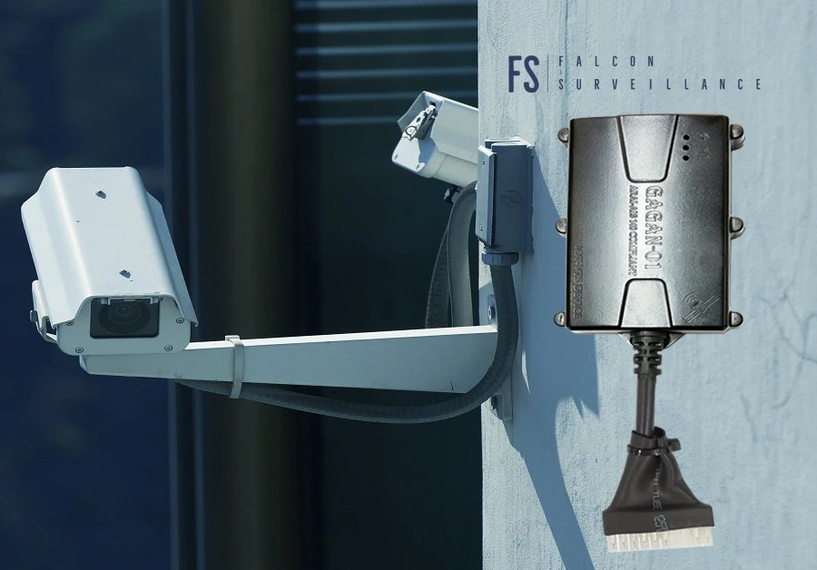

GPS tracking devices utilize high-sensitivity multi-GNSS receivers to calculate coordinate data (latitude, longitude, speed, and heading) by processing signals from orbiting satellites. Once calculated, this location data is sent in real-time to cloud monitoring servers using cellular networks (such as 4G LTE/2G). If a vehicle enters a remote area with cellular signal drops (such as rural roads in Madhya Pradesh), the tracker stores the location points in its built-in flash memory. Once the vehicle re-enters network coverage, the device automatically uploads all stored historical data, ensuring no route history is lost.
Premium Security Solutions
Commercial Truck GPS Systems in Shahdol
Professional consultation, advanced tech equipment, expert wiring, and complete lifecycle support in Shahdol and nearby MP regions.
Why Deploy
Security requirements have grown exponentially in recent years. Deploying high-fidelity Commercial Truck GPS Systems ensures round-the-clock monitoring and solid protection of your property, whether it is a private residence, a corporate office, a retail store, or a large warehouse in Shahdol.
At Falcon Surveillance, we understand the local security challenges faced by businesses and residents in Shahdol, Sohagpur, Burhar, and other surrounding areas. Our custom security solutions are tailored to bridge this gap, integrating industry-best sensors, high-definition recording channels, and reliable remote access systems.
Local Presence & Quick Installation
Our local office in Shahdol near the IG Bungalow allows our maintenance engineers and field installers to reach your site in record time, assuring swift configurations and same-day service support.
Top 5 Security Benefits
-
✓
Real-Time Deterrence: Visibly reduces vandalism, break-ins, and unauthorized access.
-
✓
Remote Live Access: Monitor live feeds instantly using your iOS/Android mobile phones or tablets.
-
✓
Clear Forensic Evidence: Full HD/4K resolution files protect you during insurance or legal disputes.
-
✓
Automated Alerts: Smart motion detection notifications push alerts to you during off-hours.
-
✓
Zero Management Hassles: Our team handles everything from setup wiring to periodic maintenance checkups.
Our Professional Setup & Support Cycle
We handle each project with military-grade precision, ensuring no blind spots and zero layout vulnerabilities.
01
Site Assessment
Our team visits your property in Shahdol to check camera angles, lighting conditions, and signal coverage thresholds.
02
Custom Design
We select matching components (dome, bullet, NVRs, routers) to build a robust system structure within your budget range.
03
Professional Wiring
Conduits are placed cleanly with waterproof junction boxes to ensure cables are safe from environmental damage.
04
Mobile Pairing
We configure routers, port-forwarding, and pair the app on your mobile phone for real-time remote monitoring access.
System Maintenance & Longevity
Like any premium hardware, surveillance and tracking systems require periodic checks to guarantee peak performance when you need them most. We offer comprehensive AMC (Annual Maintenance Contracts) across Shahdol.
âš¡ Lens Cleaning & Focus Calibration (quarterly check)
âš¡ Hard Drive Recording & Bad Sector Verification
âš¡ Power backup / UPS battery degradation checks
âš¡ Waterproofing seals on outdoor junction boxes

Frequently Asked Questions
Read detailed, professional answers to key questions regarding surveillance cameras, real-time GPS tracking systems, access setups, and local installation standards in Shahdol and surrounding districts.
A remote engine ignition cutoff switch is an anti-theft feature that allows vehicle owners to disable their engine using a smartphone application. The tracker is wired directly to the vehicle's ignition starter circuit via a 12V automotive relay. When a cutoff command is sent, the relay breaks the ignition circuit, preventing the engine from starting. For safety, the GPS software only executes the command when the vehicle is stationary or moving below 10 km/h, preventing sudden engine shutdowns at high speeds. Falcon Surveillance installs this anti-theft system on cars and commercial fleets in Shahdol.
Geofencing allows you to define virtual geographic boundaries (such as a school zone, parking lot, warehouse boundary, or city limits) on a digital map. The GPS tracking software constantly monitors vehicle locations relative to these boundaries. When a vehicle crosses, enters, or exits a geofenced area, the system triggers instant alerts, including push notifications, SMS warnings, or emails. This feature helps logistics managers in Shahdol monitor delivery zones, optimize transit routes, and receive alerts if a vehicle is moved without authorization.
GPS trackers draw power from the vehicle's main battery. While their power consumption is minimal, continuous real-time tracking can drain a battery if the vehicle remains parked for weeks. To prevent this, Falcon Surveillance trackers feature intelligent sleep modes. When the built-in accelerometer detects that the vehicle has been stationary for over 10 minutes, the device enters sleep mode, disabling cellular data and drawing minimal power. The device wakes up instantly when vibration or ignition is detected, ensuring reliable tracking without draining your battery.
Our enterprise fleet management software offers detailed analytical reports to help optimize operations. Users can generate daily mileage summaries, trip start/stop histories, idle time analyses, fuel usage calculations, and route deviation logs. The system also tracks speed warnings, hard braking events, and maintenance schedules (such as oil changes or filter replacements). These automated reports allow transport businesses in Shahdol to lower fuel costs, reduce vehicle wear, improve safety, and manage delivery schedules effectively.
For commercial trucks and heavy logistics, we integrate GPS hardware with high-precision fuel monitoring sensors, such as capacitive fuel level rods or digital CAN bus adapters. The sensor is installed directly into the vehicle's fuel tank, measuring fuel levels in real-time. This level data is transmitted alongside GPS coordinates, showing fuel levels relative to vehicle location. The software analyzes this data to track fuel efficiency, identify anomalies (such as rapid fuel drops), and send instant warnings to prevent fuel theft in Shahdol.
Yes. Falcon Surveillance supplies compact, battery-powered personal GPS trackers designed for vulnerable individuals, school children, and valuable assets. These devices are lightweight and fit easily in bags or pockets. They feature an integrated SOS button; when pressed, the tracker sends instant coordinates and call requests to registered emergency numbers. Real-time tracking and geofencing allow family members in Shahdol to monitor loved ones and receive warnings if they exit designated safe zones.
Falcon Surveillance provides a comprehensive 1-year replacement warranty on all GPS tracking hardware. If a device experiences configuration issues or hardware failures during normal use, our technical team in Shahdol will replace it. We configure all software settings, test connectivity, and handle the physical installation to ensure reliability. We also provide ongoing technical support, app updates, and cellular SIM card configuration to keep your vehicle tracking active year-round.
Yes. Insurance providers and law enforcement accept historical GPS tracking logs as reliable evidence for vehicle location and speed. In the event of a vehicle theft, live tracking data helps police locate and recover the asset quickly. For accident investigations, GPS speed logs and route tracking provide accurate record data regarding vehicle speed and direction, helping clear drivers of false liability claims and supporting claims processing for vehicle owners in Shahdol.
Driver behavior analytics utilize built-in accelerometers and GPS tracking algorithms to monitor driving habits. The system tracks unsafe actions, such as over-speeding, harsh acceleration, rapid braking, sharp cornering, and extended engine idling. The software scores every driver based on these metrics. By identifying areas for improvement, fleet managers in Shahdol can train drivers, reduce fuel consumption by up to 15%, minimize wear on tires and brakes, and lower overall vehicle maintenance costs.
Contact Falcon Surveillance
Premium security support that feels personal and immediate.
From consultation to installation, we help protect homes, shops, offices, fleets, and industrial premises with confidence and care in Shahdol and nearby areas.
Phone
WhatsApp
Working hours
10 AM – 9 PM
Emergency service
24 Hours
Request a callback
Share your needs and our team will get back to you with a tailored quote.